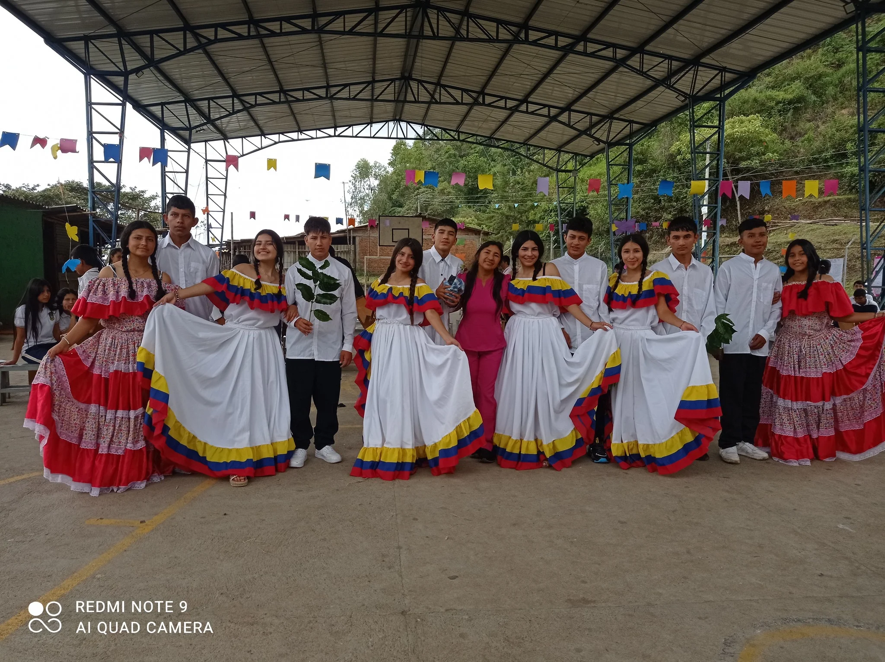

Conocenos
RESEÑA HISTORICA
Santa Rita fue fundada en el año de 1939, con una población de 956 habitantes, es la historia de una reubicación desde antes que fuera localizada en un viejo pueblo, ubicado en el cementerio en la finca del señor Lucio Gómez. En 1939 el pueblo fue reubicado en la finca el Placer que fue comprado por el señor Rufino Calvo quien fue el fundador.
En 1942 se constituye como corregimiento, gracias al esfuerzo de la gente se organizó un grupo conformado por Anselmo Gómez, Laureano Cerón, Absalón Gómez, Rogelio Gómez. En 1960 fue fundada la iglesia que hoy lleva su mismo nombre.
En una visita política realizada por el doctor Juan José Chaux Mosquera a Santa Rita, acompañado por el doctor Jeremías Molano Sánchez, gestor de la idea de crear un centro educativo para la enseñanza de educación secundaria , y el señor Joel Cerón siendo supervisor de educación en aquel momento y residente de Santa Rita reforzó la idea de proseguir con la propuesta.
En reunión realiza en el año de 1986 con algunos docentes y comunidad en general de los corregimientos de Santa Bárbara, santa Rita, el Palmar , los Uvos y el paraíso , se conforma una junta de gestión de la siguiente manera:
| Presidente: | Vicepresidente: | Fiscal: | Vocal: | Secretaria: |
|---|---|---|---|---|
| Armando Ruales | Meyer Marlene Ortega | Ana Ilia Rengifo | Astroberto Ceron | Mireya Ortega |
Quienes presentan el proyecto de creación de un colegio de modalidad agropecuaria ante entidades como: CRC, ALCALDIA MUNICPAL Y GOBERNACION DEPARTAMENTAL. Posteriormente se convoca nuevamente a una asamblea donde se eligieron comités de trabajo, finanzas y un grupo veedor ,en dicha asamblea se acuerda que la construcción de la planta física sea en la cabecera corregimental de Santa Rita, en la finca denominada el recreo de propiedad de la señora MIREYA ORTEGA, por reunir las condiciones de infraestructura, y con el aporte del doctor Guillermo Gonzáles Mosquera, siendo senador de la república en el momento brinda un apoyo económico de cuatrocientos mil pesos ( 400.000) para la compra del lote.
La obra se inicia con los aportes económico del doctor Juan José Chaux Mosquera con ocho millones de pesos (8.000.000), y la empresa Cismocol dedicada a la explotación de petróleo bajo la dirección del doctor JAIME PEROSO aporta tres millones de pesos (3.000.000) .La construcción duro mas o menos 6 meses con la colaboración de la comunidad, empleados públicos y las respectivas colonias residentes en Popayán y Cali quienes aportaron con un día de trabajo.
El primero de octubre de 1990 se inician las labores académicas con los profesores FULVIA SALAZAR, ALBA NERYS GOMEZ, NORVEY RODRIGUEZ, ENIO MARTINEZ, DANIEL MUÑOZ, HAROLD ORTEGA, HAMILTON ACOSTA Y EL INGENIERO VICTOR HUGO MUÑOZ, quienes trabajaron algunos meses sin remuneración, posteriormente la Junta de Acción Comunal con tenacidad y sosiego comprometen al gobierno municipal con la ayuda de un pago mínimo para los docentes.
La primera salida pedagógica del colegio fue durante los días 15-16 y 17 de diciembre de 1990, el objetivo era conocer donde nacían los ríos caquetá, magdalena, cauca, los lugares que visitaron fueron la laguna del cusí yaco, santiago y la launa del magdalena.
El dos de marzo de 1996 eligieron la asociación de futuros agricultores de Colombia (ASOFACR) Formada por los mejores estudiantes así:
| Presidente: | Vicepresidente: | Secretaria: | Tesorera: | Fiscal: | Vocal: |
|---|---|---|---|---|---|
| Holmes Quijano | Nohelia Ortega | Hermes Gómez | Mauren Manquillo | Oscar Ordóñez | Nancy Papamija |
La primera semana cultural fue el 23 de abril con la exposición de carteleras referentes al día del idioma incluyendo otras actividades culturales.
El 21 de junio termina el año escolar con 32 estudiantes de los 46 que iniciaron .El 9 de septiembre se dio inicio al segundo año escolar con la siguiente planta de profesores: Ignacio Muñoz ( rector ), Anadiola Sotelo ( secretaria), Martha Bolaños ( Coordinadora ), profesores : Simeón Molano, Harold Ortega, Hamilton Acosta , Aura Muñoz.
Aprobación de estudios: los días 12, 13 y 14 de mayo de 1993 el señor Leonel Pino , representante de la secretaria de Educación visita el colegio, quien aprueba los grados sexto, séptimo y octavo , según resolución 1423 del 10 de junio del año en curso.
El primero de febrero de 1995 eligen como rectora a la señorita ALBA NERYS GOMEZ, los días 12 y 13 de mayo de 1996 la secretaria de educación visito el plantel para la aprobación de estudios de la básica primaria , bajo la supervisión de SILVIA NOGUERA, ALVARO HERRERA y el señor ALBERTO DUQUE, quienes aprobaron el grado sexto. Luego los días 11,12 y 13 de diciembre el plantel fue visitado por la secretaria de educación para la aprobación de estudios hasta el 2001.
En el año 2002 inicia sus labores como rectora la Especialista SARA ROSINA CAJIBIOY GIRONZA, con su gestión y sentido de pertenencia hacia la institución logra notables cambios hasta la fecha. En abril de 2004 se fusiona el Bachillerato Agropecuario Santa Rita, con las 14 sedes bajo el nombre de INSTITUCION EDUCATIVA AGROPECUARIA SANTA RITA
MISIÓN
La institución Educativa Agropecuaria Santa Rita, es de carácter oficial, ofrece los niveles de pre-escolar, básica primaria, secundaria y Media técnica agropecuaria; pretende convertirse en una institución formadora de bachilleres agropecuarios, capaces de liderar procesos de transformación sociocultural partiendo del contexto para generar cambios trascendentales a través de los espacios de vida y las fincas familiares, generando un cambio en lo sociocultural, político, económico, tecnológico y ambiental, fundamentado en la concepción integral de la persona como aspecto indispensable para una convivencia basada en los valores del respeto, tolerancia, solidaridad, honestidad, imparcialidad, integridad, justicia, apertura al cambio, eficacia, flexibilidad y participación comunitaria.
VISIÓN
Formar hombres íntegros en el ser, el saber y el hacer en los diferentes campos de la producción agropecuaria teniendo en cuenta la producción intelectual, cultural y ambiental, en un proceso pedagógico que los conlleven a ser competentes y comprometidos con el bienestar de la sociedad para que su trabajo sea armónico con el contexto socio cultural de los habitantes indígenas campesinos
Perfil del egresado
Partiendo de una visión de compromiso con el contexto regional, el egresado tendrá una formación integral que le permita asumir su propia responsabilidad y orientado a los procesos de desarrollo humano con un espíritu de liderazgo que fortalezca y trascienda su labor en la proyección comunitaria.
- Como Individuo: ser crítico, analítico y con conocimientos básicos que le permitan apropiarse de las diferentes tecnologías y saberes para la búsqueda de solución a problemas que se presenta en el contexto con el cual interactúa.
- Persona Con Autonomía, capaza de respetar, practicar y defender los derechos humanos a nivel individual y social.
- Como Ser Social: debe comprender la relación de la institución con los cambios que afronta la comunidad actual, convirtiéndose en un bachiller transformador, comprometido con los retos de la educación y los nuevos cambios tecnológicos para fortalecer la diversidad cultural y social de la región y el país,
- Como Ser Histórico: debe reconocer las relaciones sociales, culturales y organizativas, para que describa, interprete, comprenda e intervenga en el reconocimiento y respeto de los grupos socioculturales a partir del quehacer pedagógico de su propio entorno.
- Ético: una persona ética honesta y sincera comprometido con su comunidad que respete la individualidad y la diversidad sociocultural.
- Títulos: La Institución Educativa Agropecuaria Santa Rita, otorgará al
estudiante que apruebe el ciclo de básica secundaria (grado noveno) un certificado de estudio del
BACHILLERATO BÁSICO que le habilita para ingresar a la educación media Técnica, con un titulo de
BACHILLER TECNICO AGROPECUARIO según las disposiciones, planes, y programas vigentes.
Por la articulación con el SENA Regional Cauca tendrá un titulo de: TRABAJADOR CALIFICADO, “OTROS” para desempeñarse en las competencias laborales que le permitan un trabajo en los diferentes campos de las labores agropecuarias.